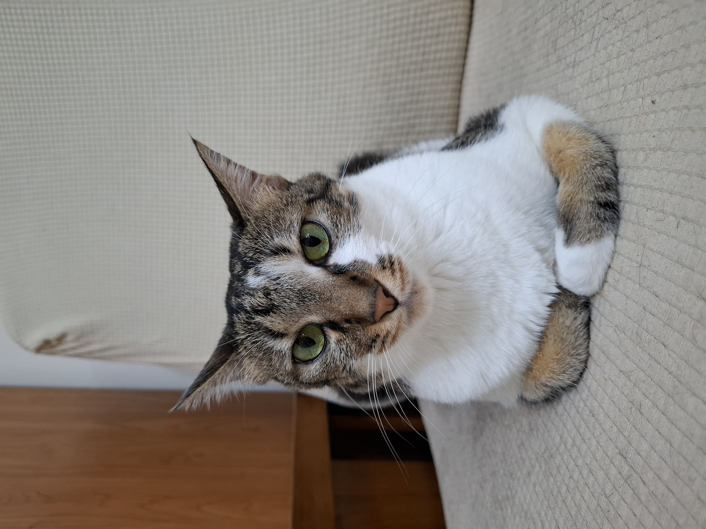
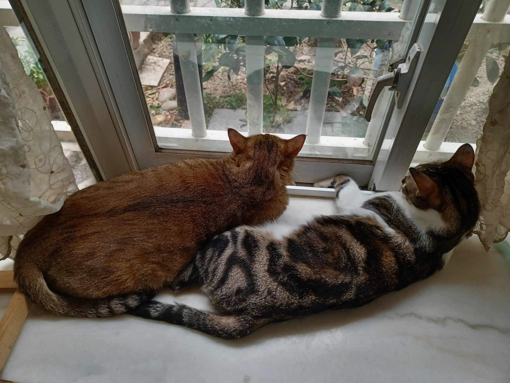
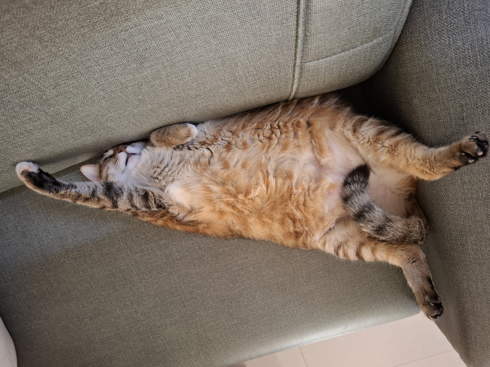
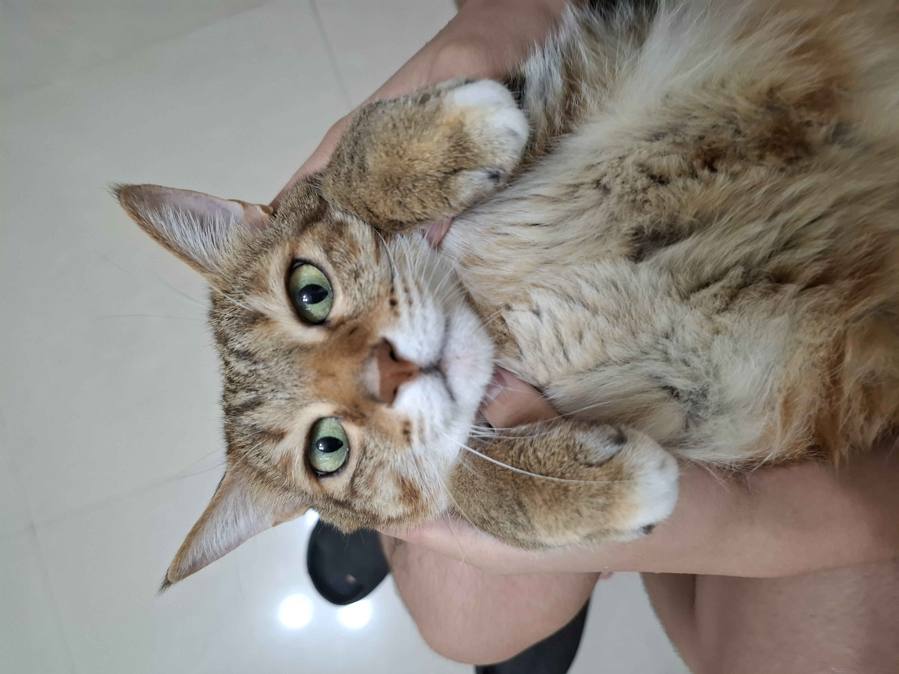

莉莉則是相對比較內向的小貓，她今年已經6歲了，跟胖胖的娜娜不一樣，莉莉很瘦小且容易被外界的事物嚇到，但她還是很可愛。

我的家裡養了2隻貓，左邊的那隻叫做 娜娜(Nana), 右邊的那隻叫做 莉莉(Lily). 她們兩隻都是從街上被救援回來的，而且都是母的


娜娜是一隻七點五公斤的胖貓，他今年已經7歲了而且很貪吃。但是他對人沒有甚麼警戒心，是一隻很親人的貓

莉莉則是相對比較內向的小貓，她今年已經6歲了，跟胖胖的娜娜不一樣，莉莉很瘦小且容易被外界的事物嚇到，但她還是很可愛。